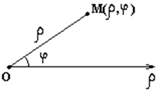
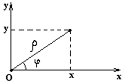
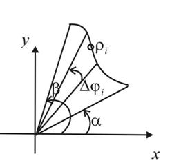

1.3. Площадь фигуры, заданной в полярной системе координат


 Связь
декартовых и полярных координат
Связь
декартовых и полярных координат
Если
Площадь
криволинейного сектора
– непрерывная
функция, –
площадь криволинейного сектора.
Связь
декартовых и полярных координат